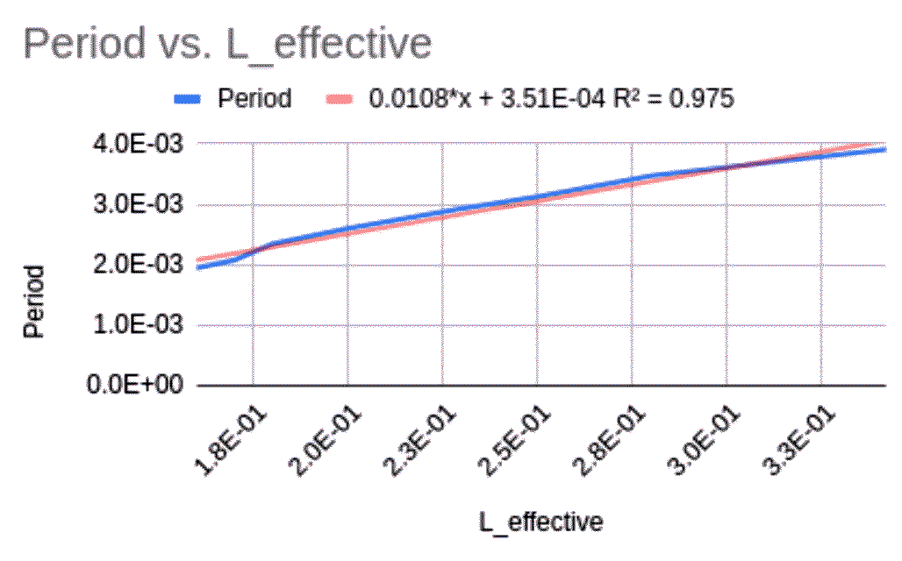

Speed of Sound Lab
Ben Hammond
Physics Period 3
Dr. Kosic
250321
Pre-Lab Questions
1. Harmonics practice questions.
a. The tube will resonate at L = nλ/4, when n = 1, 3, 5, 7, etc. Sketch wavelengths in the diagrams of the open ended tubes to show resonance at L = λ/4, L = 3λ/4, and L = 5λ/4. You may want to refer to your book.
L = λ/4 │ / ^ │ ├───────┤ │ \ _ │ L = 3λ/4 │ / ^ \_/ ^ │ ├─────────────┤ │ \ _ /^\ _ │ L = 5λ/4 │ / ^ \_/ ^ \_/ ^ │ ├───────────────────┤ │ \ _ /^\ _ /^\ _ │
b. Look up the terms rarefaction and compression and label where these occur in the diagram represented by L = 5λ/4.
L = 5λ/4 │ / ^ \_/ ^ \_/ ^ │ ├───────────────────┤ │ \ _ /^\ _ /^\ _ │ ^ ^ | | rarefaction compression
c. Look up the terms anti-node and node and label where these occur in the same diagram.
L = 5λ/4 │ / ^ \_/ ^ \_/ ^ │ ├───────────────────┤ │ \ _ /^\ _ /^\ _ │ ^ ^ | | anti-node node
2. The velocity of sound in air in meters per second is modeled by the equation `v = 331 + 0.6T` where "T" is in degrees Celsius.
a. Use the temperature probe to record the temperature near your apparatus. Record your finding.
21°C
b. Calculate the accepted velocity of sound at the current room temperature using the given equation. You will later compare your results to this value.
v = 331 + 0.6 * 21
v = 343.6 m/s
Data
┌───────┬─────────┬───────────┬───────────┐
│ Hz │ L (m) │ L_eff (m) │ V_s (m/s) │
├───────┼─────────┼───────────┼───────────┤
│ 256 │ 3.3E-01 │ 3.4E-01 │ 3.5E+02 │
│ 288 │ 2.8E-01 │ 2.8E-01 │ 3.2E+02 │
│ 320 │ 2.5E-01 │ 2.5E-01 │ 3.2E+02 │
│ 341.3 │ 2.3E-01 │ 2.3E-01 │ 3.1E+02 │
│ 384 │ 2.0E-01 │ 2.0E-01 │ 3.1E+02 │
│ 426 │ 1.8E-01 │ 1.8E-01 │ 3.1E+02 │
│ 480 │ 1.7E-01 │ 1.7E-01 │ 3.3E+02 │
│ 512 │ 1.6E-01 │ 1.6E-01 │ 3.3E+02 │
└───────┴─────────┴───────────┌───────────┐
Average: │ 3.2E+02 │
└───────────┘
err = | accepted - calculated | / accepted * 100
err = | 343.6 - 320 | / 343.6 * 100
err = 6.87%
Graph:

Post Lab Questions
- What does the slope in the line in your graph represent?
- Refer back to pre-lab question 1. When determining L, why would one not consider n = 2, 4, 6, etc?
- The low E string on a guitar is 64.5cm long guitar and is tuned to play an “open” note at 82.41Hz.
- Find the wavelength of the fundamental vibration.
- What is the wavelength of the sound produced?
- Why is there a difference in your answers for part a and b?